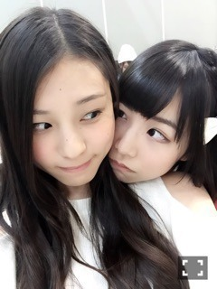
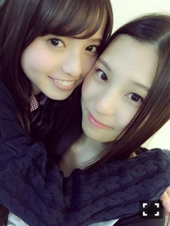

| 2015/04 13 Mon | まさに2階から目薬_(．．*)vol. 22 |
みなさんこんばんはー！
さがらいおりです！
先週の土曜日は
NARUTOライブイベントに
出させていただきました！！
生駒さんがリハの時から
終始テンション高かったです
そんな生駒さんが可愛くて
好きです♡
ライブも楽しかったです♪♪
それでね、
その日マニキュア塗ったままだったから
落としたんです。
それで落とし終わって
携帯触ってたら右手の親指だけ
塗ったままだったの(。-∀-)
すごいよね、なんか、、
自分でもちょっとびっくりした、、
その後ちゃんと落としましたm(_ _)m
あー安室奈美恵様の
New Albumが出るー(；；)
かっこいい感じで
とっても楽しみ┏( .-. ┏ ) ┓
あはーーー♡♡
あと、
三四郎さんのANN0！！
すごい面白い♡
ラジオスキデス♡
これから
色々な方のラジオ聴いてみたいので
おすすめの方のラジオとか
この方のこの回は面白かった！など
教えて下さると有り難いです♪♪
よしログもたまに観てて
楽しくて面白いんです( ´艸｀)
そして、日曜日は
東京ビッグサイトで握手会でした！
最近は毎週皆さんに会えて
楽しい嬉しいhappy♡
るんるん
1 部も 2 部も
真夏さんから
もらったお洋服着ました！
先週と全く一緒で
お洋服を楽しみにしてた方は
すみません(>_<)！
ちなみに先週は
巻き髪とお団子でした！

日奈子～♡♡
1 部の髪型は
ストレート
2 部はそのままツインテールしました！
いおりが着替えちゃって真夏さんと
写真撮れなくて、、
また今度撮りたいと思います！！
やっぱり
皆さんとお話するのは
楽しいですね♪♪
言われて初めて気付くことも多いし、
最近はありがたい事に
たくさんの方がレーンに来てくれて
いおりのことをすごい
考えてくれる方もいるし
ホントに皆さんに
出会えて良かったな～って
思います(/ω＼)
いつもありがとうございます♡
それから昨日ね、
飛鳥ちゃんがね、
台湾に行った時にね、
いおりにね、
お土産買ってきてくれたの♡

リップと
チョコと
ヌガーくれたの！
すごい美味しかった(´,,•ω•,,)♡
そして 5 部終わりに
玲奈さんの兼任解除のセレモニーがありました
ライブの時に
玲奈さんをぱっと見た時に
｢プロってこういう事か、、｣
って思った事があって
言葉だけじゃなくて
見て学ぶこともたくさんあったから
乃木坂から
いなくなってしまうのは
とても残念です
昨日のセレモニーを見て
もっと頑張ろうと思いました！
玲奈さん、乃木坂に来て下さって
本当にありがとうございました！
告知
発売中 Gザテレビジョン(みり愛、琴子)
裏表紙をやらせて頂いてます！
4 / 15 POKER FACE(万理華さん)
NOGIBINGO４
ぜひ見てください(*^^)v
文字多めですみませんm(_ _)m
i o r i .

コメント(351)
2015/04/13 23:06